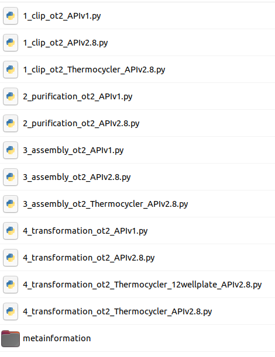
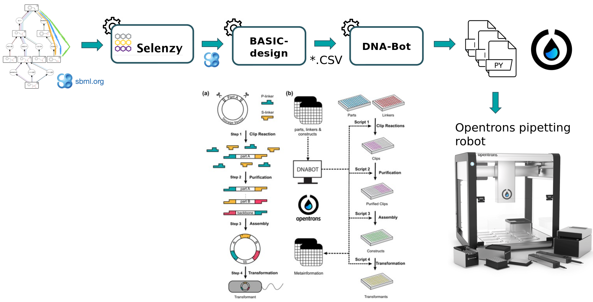

Synthetic biology is a novel engineering discipline which requires computational tools for the design of metabolic pathways for the production of chemicals such as SynBioCAD portal which is the first Galaxy set of tools for synthetic biology and metabolic engineering (Hérisson et al. 2022).
In this tutorial, we will use a set of tools from the Genetic Design - BASIC Assembly Workflow (https://galaxy-synbiocad.org) which will enable you to design plasmids implementing metabolic pathways for the bioproduction of lycopene in E.coli (one of the preferred host cell for microbial biochemicals production).
Lycopene is a potent antioxidant and has been widely used in the fields of pharmaceuticals, nutraceuticals, and cosmetics. It’s widely found in fruits including tomato, watermelon, guava, and papaya but the extraction method of lycopene from these natural sources is expensive, complicated and cannot match the large market demand.
To address this demand, synthetic biology and metabolic engineering have been employed to develop microbial cell factories (e.g. E.coli strains) for lycopene production.
To design plasmids encoding lycopene bioproducing pathways, we will use the BASIC assembly method (as described in Storch et al. 2015) which relies on orthogonal linkers and type IIs restriction enzyme cleavage to provide a robust and accurate assembly of DNA parts into plasmid constructs. From these construct definition, the workflow will generate scripts enabling the automatic build of the plasmids as well as the transformation of strains using an Opentrons liquid handler robot. After downloading these scripts onto a computer connected to an Opentrons, one can perform the automated construction of the plasmids at the bench.
The workflow scheme we will use is shown below. First, we will run the steps of this workflow individually so as not to neglect the understanding of the intermediate steps as well. Then, we will run the workflow automatically so that it itself retrieves the outputs from the previous step and gives them as input to the next tool.
First we need to upload and prepare the following inputs to analyze:
One SBML (Systems Biology Markup Language) file modeling a heterologous pathway producing lycopene such as those produced by the Pathway Analysis Workflow (https://galaxy-synbiocad.org).
The parts_for_lycopene.csv file listing the parts to be used (linkers, backbone and promoters) in the constructions.
Two YAML files providing two examples of settings, i.e. providing the identifiers of the laboratory equipment and the parameters to be used in the Opentrons scripts.
Get data
Hands-on: Data upload
Create a new history for this tutorial named Genetic Design - BASIC Assembly Analysis.
Click galaxy-uploadUpload Data at the top of the tool panel
Select galaxy-wf-editPaste/Fetch Data
Paste the link(s) into the text field
Press Start
Close the window
Rename the datasets if you want to shorten the file names.
Rename rp_002_0011.xml to pathway.xml.
Click on the galaxy-pencilpencil icon for the dataset to edit its attributes
In the central panel, change the Name field
Click the Save button
Find enzymes using Selenzyme
At first, a pathway generated by the Pathway Analysis workflow (https://galaxy-synbiocad.org) is provided as input to the Selenzyme tool (Carbonell et al. 2018). Selenzyme searches for enzymes corresponding to each reaction of the pathway. It performs a reaction similarity search in the reference reaction database MetaNetX and outputs an updated SBML file annotated with the enzyme UniProt IDs.
The tool provides several scores that can be combined in order to define an overall score. Scores are given for reaction similarity, conservation based on a multiple sequence alignment, phylogenetic distance between source organism and host, and additional scores calculated from sequence properties as shown in the example bellow.
Hands-on: Annotate enzymes with Uniprot IDs from a SBML pathway
Run Selenzyme ( Galaxy version 0.2.0) with the following parameters:
param-file“Pathway (SBML)”: Select pathway.xml from your current history
In “Advanced Options”:
“Host taxon ID”: Leave the default value 83333. This stands for using E. coli as the chassis host.
“Comma separated taxon IDs of output enzyme sequences”: enter 553 which is the taxon ID of the Pantoea ananatis strain from which we want to extact enzymes
Comment
This tool will produce annotated pathway with UniProt IDs in XML and CSV format.
Question
How are identified the enzyme in the SBML file?
Enzyme are identified by their UniProt ID
Generate potential constructs from SBML file using BasicDesign
Second, the BasicDesign tool extracts enzyme IDs contained in the SBML (previously produced by Selenzyme) to generate genetic constructs compliant with the BASIC assembly approach. It uses as input an SBML file annotated with enzyme IDs for each reaction, and optionally one or several CSV files listing by their IDs the linkers, the promoters and the backbone used (parts_for_lycopene.csv). Example, below:
For linkers, the type annotation should be one of neutral linker, methylated linker, peptide fusion linker or RBS linker. For user parts, type should be one of backbone or constitutive promoter. Other type will raise a warning and will be omited.
BasicDesign converts the SBML file into CSV files describing the DNA-parts to be included into each construct (in an operon format, i.e. with only one promoter) and enumerate possible combinations of promoters, RBSs and enzymes into constructs. Depending on the numbers of enzymes per reaction, of RBSs and promoters available, and whether or not to perform CDS permutation within the operon, the number of constructs may vary.
Hands-on: Generate genetic constructs from the previously annotated SBML file
Run BasicDesign ( Galaxy version 0.3.4) with the following parameters:
param-file“rpSBML file”: uniprot_ids (output of Selenzymetool in xml format)
In “Advanced Options”:
param-file“Linkers and user parts”: Select parts_for_lycopene.csv from your current history in csv format
Comment
This tool will output a CSV constructs file (listing the constructs to be built), where each row corresponds to one construct and consists of a sequence of BASIC linker and DNA part IDs. The two other outputted CSV files provide the plate coordinates of (i) the BASIC linkers and (ii) the DNA-parts that the user will need to provide. Additionally, one SBOL (Synthetic Biology Open Language) file is produced for each construct generated. These files can be downloaded and visualized using online tools such as VisBOL.
Question
How many constructs did you get ?
88 construct designs were generated in CSV and SBOL format.
Generating python scripts using DNA-Bot
In the last step, the DNA-Bot tool (Storch et al. 2020) reads the list of constructs (previously produced by BasicDesign) and the DNA-parts position on the source plates and generates a set of python scripts to drive an Opentrons liquid handling robot for building the the plasmids. Optional parameters can be set by the user to define the plastic labwares to be used, and set protocol parameters such as washing or incubation times for purification step (dnabot_paris_settings.yaml).
Hands-on: Generate DNA Bot python scripts
Run DNA-Bot ( Galaxy version 3.1.0) with the following parameters:
param-file“Source Construct”: Constructs (output of BasicDesigntool)
param-files“Plate files”: Select these two files: User parts plate (output of BasicDesigntool), Biolegio plate (output of BasicDesigntool) with Multiple datasets.
In “Advanced Options”:
param-file“Yaml file providing labware IDs and parameter to be used (Optionally)”: Select either dnabot_paris_settings.yaml or dnabot_london_settings.yaml from your history)
Click on param-filesMultiple datasets
Select several files by keeping the Ctrl (or COMMAND) key pressed and clicking on the files of interest
Comment
This tool will output DNA-Bot scripts in tar format. You need to download it and decompress the archive. After downloading these scripts onto a computer connected to an Opentrons, one can perform the automated construction of the plasmids at the bench. Additional metadata meaningful to keep track of parameters are also outputted by the tool.

Question
Looking at the scripts names, can you figure out the main steps of DNA-Bot ?
DNA-Bot outputs python scripts that implement the 4 assembly steps: clip reactions, purification, assembly and strain transformation. In short, the Clip reactions step prepares the mixes for the ligation of the individual DNA parts with the linkers; the Purification step purifies the linker-ligated DNA parts using magnetic beads and the Opentrons magnetic module; the Assembly step mixes the DNA purified parts to build the final constructs; while the Transformation step transforms the chassis micro-organism with the plasmid and inoculates onto agar.
Run the Genetic Design - BASIC Assembly Workflow
In this section, you can run the Genetic Design - BASIC Assembly Workflow more easily and fastly following these instructions:
Click on Workflow on the top menu bar of Galaxy. You will see a list of all your workflows.
Click on galaxy-uploadImport at the top-right of the screen
Paste the following URL into the box labelled “Archived Workflow URL”: https://training.galaxyproject.org/training-material/topics/synthetic-biology/tutorials/basic_assembly_analysis/workflows/Genetic_Design_BASIC_Assembly.ga
Click the Import workflow button
Below is a short video demonstrating how to import a workflow from GitHub using this procedure:
Video: Importing a workflow from URL
Click on Workflow on the top menu bar of Galaxy. You will see Genetic Design - Basic Assembly Workflow
Click on the workflow-run (Run workflow) button next to your workflow
Provide the workflow with the following parameters:
param-file“Pathway (SBML)”: Select pathway.xml from your current history
“Host taxon ID”: Leave the default value 83333. This stands for using E. coli as the chassis host.
“Comma separated taxon IDs of output enzyme sequences”: enter 553 which is the taxon ID of the Pantoea ananatis strain from which we want to extact enzymes
param-file“Linkers and user parts”: Select parts_for_lycopene.csv from your current history in csv format
param-file“DNA-Bot settings (Optionally)”: Select either dnabot_paris_settings.yaml or dnabot_london_settings.yaml from your history)
Comment
All the outputs will be automatically generated and identical to the previous ones.
You've Finished the Tutorial
Please also consider filling out the Feedback Form as well!
Key points
Knowing the reaction is not sufficient to implement a pathway, one needs to find out which enzyme is capable of catalyzing the reactions. For this, Selenzyme is used to search for enzymes using reactions as query. As a result, UniProt IDs of enzymes are stored as annotation in SBML files.
Expressing pathways into cells involved not only gene encoding enzymes, but also additional genetic parts such as libraries of promoter(s), RBSs, terminators, … From these, multiple combinations of parts are possible, and each one could produce different results. Several methods exist to assemble genetic parts together into plasmids, the BASIC Assembly approach is one of them. The BasicDesign tool generates combinations of the genetic parts that are compliant with the BASIC Assembly patterns.
Automatizing the construction of compound producing strains necessitate to translate protocols into instructions that could be understable by lab robots. To do this, DNA-Bot reads the list of constructs and the DNA parts information and generates python instructions for the automated build of the genetic constructs using OpenTrons liquid handling robots.
Storch, M., A. Casini, B. Mackrow, T. Fleming, H. Trewhitt et al., 2015 BASIC: A New Biopart Assembly Standard for Idempotent Cloning Provides Accurate, Single-Tier DNA Assembly for Synthetic Biology. ACS Synthetic Biology 4: 781–787. 10.1021/sb500356d
Carbonell, P., J. Wong, N. Swainston, E. Takano, N. J. Turner et al., 2018 Selenzyme: enzyme selection tool for pathway design (O. Stegle, Ed.). Bioinformatics 34: 2153–2154. 10.1093/bioinformatics/bty065
Storch, M., M. C. Haines, and G. S. Baldwin, 2020 DNA-BOT: a low-cost, automated DNA assembly platform for synthetic biology. Synthetic Biology 5: 10.1093/synbio/ysaa010
Hérisson, J., T. Duigou, M. du Lac, K. Bazi-Kabbaj, M. S. Azad et al., 2022 Galaxy-SynBioCAD: Automated Pipeline for Synthetic Biology Design and Engineering. 10.1101/2022.02.23.481618
Feedback
Did you use this material as an instructor? Feel free to give us feedback on how it went.
Did you use this material as a learner or student? Click the form below to leave feedback.
Hiltemann, Saskia, Rasche, Helena et al., 2023 Galaxy Training: A Powerful Framework for Teaching! PLOS Computational Biology 10.1371/journal.pcbi.1010752
Batut et al., 2018 Community-Driven Data Analysis Training for Biology Cell Systems 10.1016/j.cels.2018.05.012
@misc{synthetic-biology-basic_assembly_analysis,
author = "Kenza Bazi-Kabbaj and Thomas Duigou and Joan Hérisson and Guillaume Gricourt and Ioana Popescu and Jean-Loup Faulon",
title = "Designing plasmids encoding predicted pathways by using the BASIC assembly method (Galaxy Training Materials)",
year = "",
month = "",
day = ""
url = "\url{https://training.galaxyproject.org/training-material/topics/synthetic-biology/tutorials/basic_assembly_analysis/tutorial.html}",
note = "[Online; accessed TODAY]"
}
@article{Hiltemann_2023,
doi = {10.1371/journal.pcbi.1010752},
url = {https://doi.org/10.1371%2Fjournal.pcbi.1010752},
year = 2023,
month = {jan},
publisher = {Public Library of Science ({PLoS})},
volume = {19},
number = {1},
pages = {e1010752},
author = {Saskia Hiltemann and Helena Rasche and Simon Gladman and Hans-Rudolf Hotz and Delphine Larivi{\`{e}}re and Daniel Blankenberg and Pratik D. Jagtap and Thomas Wollmann and Anthony Bretaudeau and Nadia Gou{\'{e}} and Timothy J. Griffin and Coline Royaux and Yvan Le Bras and Subina Mehta and Anna Syme and Frederik Coppens and Bert Droesbeke and Nicola Soranzo and Wendi Bacon and Fotis Psomopoulos and Crist{\'{o}}bal Gallardo-Alba and John Davis and Melanie Christine Föll and Matthias Fahrner and Maria A. Doyle and Beatriz Serrano-Solano and Anne Claire Fouilloux and Peter van Heusden and Wolfgang Maier and Dave Clements and Florian Heyl and Björn Grüning and B{\'{e}}r{\'{e}}nice Batut and},
editor = {Francis Ouellette},
title = {Galaxy Training: A powerful framework for teaching!},
journal = {PLoS Comput Biol} Computational Biology}
}
Congratulations on successfully completing this tutorial!
You can use Ephemeris's shed-tools install command to install the tools used in this tutorial.
Questions:
{kind=link}
{kind=link}
{kind=link}
{kind=link}